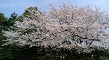
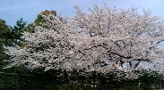

Free talk 雑談。
（322）桜 満開 先日 通りかかった愛知県の某所で、大きな桜が満開なのを見つけた。綺麗だったので、わざわざ車を降りてパチリ。  撮影ポイントをさがして うろうろしていると、さらに紅白の桜が並んで咲いているのを発見。これは珍しいと思い、こちらもパチリ。 桜百選にも選定されている愛知県岩倉市、五条川の夜桜（中日新聞、09.4.7朝刊）
先日 通りかかった愛知県の某所で、大きな桜が満開なのを見つけた。綺麗だったので、わざわざ車を降りてパチリ。

撮影ポイントをさがして うろうろしていると、さらに紅白の桜が並んで咲いているのを発見。これは珍しいと思い、こちらもパチリ。
桜百選にも選定されている愛知県岩倉市、五条川の夜桜（中日新聞、09.4.7朝刊）
以前へ 以降へ 目次へ